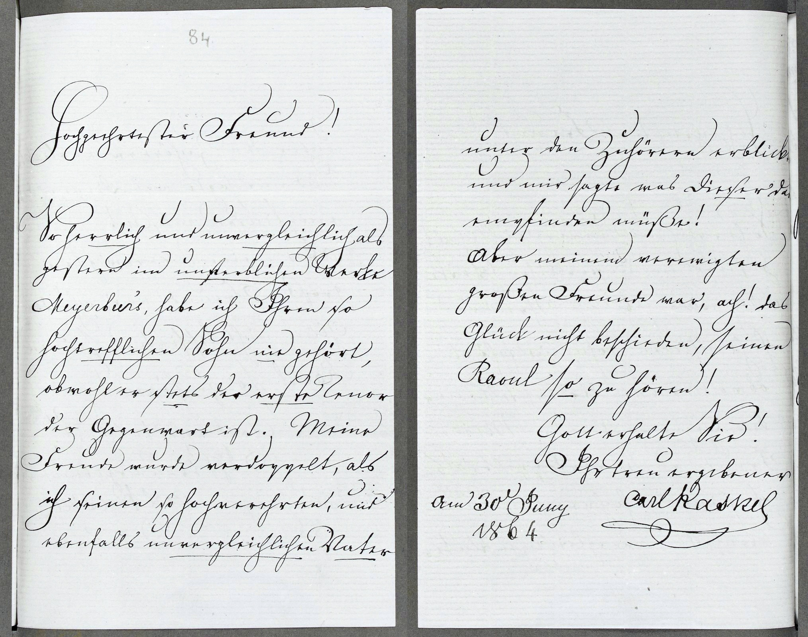
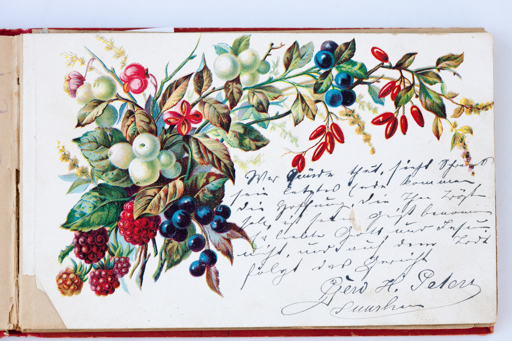
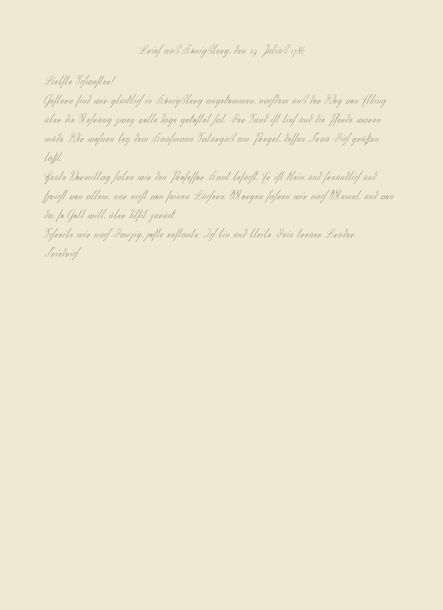
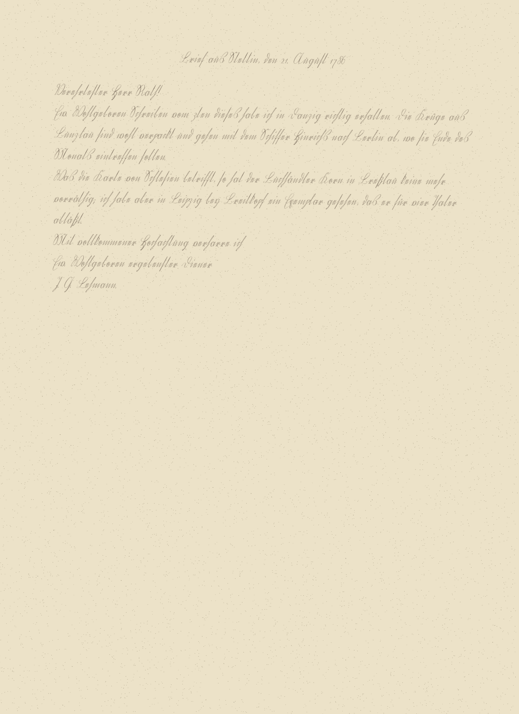
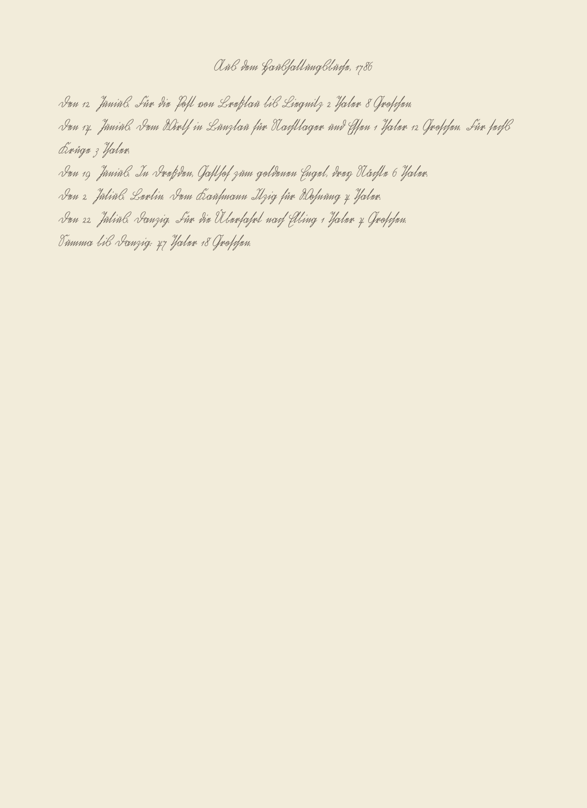

Every page, every backend
real-kaskel-to-schnorr-1864

cer 0.225wer 0.634cer_norm 0.207wer_norm 0.549lines 24$ 0.0000s 16.12
Diff against ground truth: missing or wrong extra or substituted
HſochvgerehrteſtirFreunnd!. So herrlich und unvergleichlich, als gesſtern im unsſterblichen Werke. Meyerbeerrs, habe ichIAhrensſo. hoöchvoertrecfflichen Sohn unied gehört,obwohlerstedats der ersſteTlenor der GegenwartistHh. Meine Freuinde wuürde veordoppggelt, als ichsſeinensſo hochvrerehrten, und ebenfalls unvergleichlichenVNaterunter denZzuhörern erblickteh und mirsſagte wasdDiesſer da empingfinden müßte!: Aber meinemund verewrigten. großenFStreunde waor, ach!: das Glück nicht besſchierden,sſeinenRKaounlsozu hören!:GHotrt erhalteSive!r.Ihram 30 uny. 1864. treun ergebenster Carl Kaskdtel am 30. Juny 1864e
Output as written
ſochgeehrteſtir rennd. So herrlich und unvergleichlich, als geſtern im unſterblichen Werke. Meyerberrs, habe ich Ahren ſo. höchercfflichen Sohn und ghört obwohler dats der erſte lenor der Gegenwart Hh. Meine Frinde würde vordoggelt, als ich ſeinen ſo hochrerehrten, und ebenfalls unvergleichlichen Nate unter den zuhörern erblich und mir ſagte was Dieſer da eingfinden müße: Aber menund vererigten. großen Streunde wor, ach: das Glück nicht beſchirden, ſeinen Kaonl zu hören: Hort erhalte ver. am 30 uny. 1864. tren ergebener Carl Kadtee
output: 01-use-cases/transcription/02-kurrent-handwriting/outputs/runs/20261105-090715/kraken/german_handwriting.mlmodel/real-kaskel-to-schnorr-1864.txt · PAGE-XML beside it
cer 1.000wer 1.000cer_norm 1.000wer_norm 1.000lines 0$ 0.0000s 0.31
Diff against ground truth: missing or wrong extra or substituted
Hochverehrter Freund! So herrlich und unvergleichlich als gestern im unsterblichen Werke Meyerbeers, habe ich Ihren so hochvortrefflichen Sohn nie gehört, obwohl er stets der erste Tenor der Gegenwart ist. Meine Freude wurde verdoppelt, als ich seinen so hochverehrten, und ebenfalls unvergleichlichen Vater unter den Zuhörern erblickte und mir sagte was dieser da empfinden müßte! Aber meinem verewigten großen Freunde war, ach! das Glück nicht beschieden, seinen Raoul so zu hören! Gott erhalte Sie! Ihr treu ergebenster Carl Kaskel am 30. Juny 1864
Output as written
output: 01-use-cases/transcription/02-kurrent-handwriting/outputs/runs/20261105-090715/tesseract/frak2021/real-kaskel-to-schnorr-1864.txt · PAGE-XML beside it
cer 0.060wer 0.122cer_norm 0.060wer_norm 0.122lines 22$ 0.0080s 17.21 cached
Diff against ground truth: missing or wrong extra or substituted
84 Hochvgerehrter Freund! So herrlich und unvergleichlich als gestern im unsterblichen Werke Meyerbeer's, habe ich Ihren so hochvortrefflichen Sohn nie gehört, obwohl er stets der erste Tenor der Gegenwart ist. Meine Freude wurde verdoppelt, als ich seinen so hochverehrten, und ebenfalls unvergleichlichen Vater unter den Zuhörern erblickte und mir sagte was dieser da empfinden müßte! Aber meinem verewigten großen Freunde war, ach! das Glück nicht beschieden, seinen Raoul so zu hören! Gott erhalte Sie! Ihr treu ergebenster am 30t Juny Carl Kaskelam 30. Juny1864
Output as written
84 Hochgeehrter Freund! So herrlich und unvergleichlich als gestern im unsterblichen Werke Meyerbeer's, habe ich Ihren so hochtrefflichen Sohn nie gehört, obwohl er stets der erste Tenor der Gegenwart ist. Meine Freude wurde verdoppelt, als ich seinen so hochverehrten, und ebenfalls unvergleichlichen Vater unter den Zuhörern erblickte und mir sagte was dieser da empfinden müßte! Aber meinem verewigten großen Freunde war, ach! das Glück nicht beschieden, seinen Raoul so zu hören! Gott erhalte Sie! Ihr treu ergebener am 30t Juny Carl Kaskel 1864
output: 01-use-cases/transcription/02-kurrent-handwriting/outputs/runs/20261105-090715/openrouter/google_gemini-3.8-flash/real-kaskel-to-schnorr-1864.txt · PAGE-XML beside it · prompt sha256 89b5666464a1…
cer 0.060wer 0.122cer_norm 0.060wer_norm 0.122lines 22$ 0.0090s 6.5
Diff against ground truth: missing or wrong extra or substituted
84 Hochvgerehrter Freund! So herrlich und unvergleichlich als gestern im unsterblichen Werke Meyerbeer's, habe ich Ihren so hochvortrefflichen Sohn nie gehört, obwohl er stets der erste Tenor der Gegenwart ist. Meine Freude wurde verdoppelt, als ich seinen so hochverehrten, und ebenfalls unvergleichlichen Vater unter den Zuhörern erblickte und mir sagte was dieser da empfinden müßte! Aber meinem verewigten großen Freunde war, ach! das Glück nicht beschieden, seinen Raoul so zu hören! Gott erhalte Sie! Ihr treu ergebenster am 30t Juny Carl Kaskelam 30. Juny1864
Output as written
84 Hochgeehrter Freund! So herrlich und unvergleichlich als gestern im unsterblichen Werke Meyerbeer's, habe ich Ihren so hochtrefflichen Sohn nie gehört, obwohl er stets der erste Tenor der Gegenwart ist. Meine Freude wurde verdoppelt, als ich seinen so hochverehrten, und ebenfalls unvergleichlichen Vater unter den Zuhörern erblickte und mir sagte was dieser da empfinden müßte! Aber meinem verewigten großen Freunde war, ach! das Glück nicht beschieden, seinen Raoul so zu hören! Gott erhalte Sie! Ihr treu ergebener am 30t Juny Carl Kaskel 1864
output: 01-use-cases/transcription/02-kurrent-handwriting/outputs/runs/20261105-090715/openrouter/google_gemini-3.1-pro-preview/real-kaskel-to-schnorr-1864.txt · PAGE-XML beside it · prompt sha256 89b5666464a1…
cer 0.365wer 0.561cer_norm 0.365wer_norm 0.561lines 21$ 0.0016s 12.3
Diff against ground truth: missing or wrong extra or substituted
Hochv84 Jugendfrehrterund Freund! Sohfrerrludichg und unvergleichlich als gestern imn unsterblichörtenWerkeGlanz Meyerbeers, fahaber ichIhrHenut sohofurchvortbarefflr WeichsenSohn nwiedergehöfort, obwohl so ferstetdasderauferWunste Tenorch der Gegenwart ist. MeineFreundewurde verdoppelt, als ich seinen sohochvliebenswürehrtdigen,undmiteübenfrallsunvergleichlichenVaWortern unter den Zuhförnern erblickte, und mir sagtewmasn diesfreude verdagempfindssen müßte! Abermeninemand verewigmöchtengroßen Freunde)wamir, achuf! das Glück nicht bescfehiedlen, seinen Raoul so zu fühören! Gott serhaltgneSdiech!IhGott sei mit dirtreu ergebenster Carl Kaskelam 30.ten Juny1864 Carl Radeke
Output as written
84 Jugendfreund Freund! So freudig und unvergleichlich als gestern in unerhörten Glanz Meyerbeers, fahr ich Heut so furchtbarer Weise wieder fort, obwohl so fest das auf Wunsch der Gegenwart ist. Mein Freund wurde verdoppelt, als ich seinen so liebenswürdigen, mit überall unvergleichlichen Worten unter den Zuförnern erblickt, und mir sagte man diesfreude vergessen müßte! Aber niemand vermöchte großen Freund) mir, auf! das Glück nicht befehlen, seinen Raoul so zu führen! Gott segne dich! Gott sei mit dir am 30ten Juny 1864 Carl Radeke
output: 01-use-cases/transcription/02-kurrent-handwriting/outputs/runs/20261105-090715/openrouter/qwen_qwen3-vl-235b-a22b-instruct/real-kaskel-to-schnorr-1864.txt · PAGE-XML beside it · prompt sha256 89b5666464a1…
cer 0.202wer 0.390cer_norm 0.203wer_norm 0.390lines 23$ 0.0008s 4.65 cached
Diff against ground truth: missing or wrong extra or substituted
84 Hochvgerehrtester Freund! So herrlich und unvergleichlich als-gestlerdings im unsterblichen Werke Meyerbeers, habe ich Ihren so hochvoertreffliuchten Sohn nie gehört, obwohl Siersßttetsdern ersteTeSonor der Gegenwart ist. Meine Freunde wurdevnachgerdosppielt, als ichsSie inen so hochverehrten, und ebenfalls unvergleichlichenVatRollerunter den Zuhörern erblickteund mir sagtewas, daß Sieserdaempaufzufinden müßten! Aber meinemnvwerewnigstens großen Freunde war, ach!uf das Glück nicht beschieden, seinen Raoulsozu sehören! Gott erhalte Sie! Ihr treu ergebensterCarl Kaskelam 30.ten Juny 1864 Carl Kaiser
Output as written
84 Hochgeehrtester Freund! So herrlich und unvergleichlich al- lerdings im unsterblichen Werke Meyerbeers, habe ich Ihren so hochverfluchten Sohn nie gehört, obwohl Sie ßtte den erst Sonor der Gegenwart ist. Meine Freunde wurde nachgespielt, als ich Sie in so hochverehrten, und ebenfalls unvergleichlichen Rolle unter den Zuhörern erblickt und mir sagte, daß Sie da aufzufinden müßen! Aber meinen wenigstens großen Freunde war, auf das Glück nicht beschieden, seinen Raoul zu sehen! Gott erhalte Sie! Ihr treu ergebener am 30ten Juny 1864 Carl Kaiser
output: 01-use-cases/transcription/02-kurrent-handwriting/outputs/runs/20261105-090715/openrouter/anthropic_claude-haiku-5.5/real-kaskel-to-schnorr-1864.txt · PAGE-XML beside it · prompt sha256 89b5666464a1…
cer 0.080wer 0.171cer_norm 0.082wer_norm 0.183lines 23$ 0.0166s 5.78
Diff against ground truth: missing or wrong extra or substituted
84 Hochverehrter Freund! So herrlich und unvergleichlich als gestern im unsterblichen Werke Meyerbeers, habe ich Ihren so hochvortrefflichen Sohn nie gehört, obwohl er stets der erste Tenor der Gegenwart ist. Meine Freude wurde verdoppelt, als ich seinen so hochverehrten, und ebenfalls unvergleichlichen Vater unter den Zuhörern erblickte- und mir sagte wasdDieser da empfinden müßsste! Aber meinem verewinigten großssen Freunde war, ach! das Glück nicht beschieden, seinen Raoul so zu hören! Gott erhalteSDier! Ihr treu ergebenster am 30t Juny 1864 Carl Kaskelam 30. Juny 1864
Output as written
84 Hochverehrter Freund! So herrlich und unvergleichlich als gestern im unsterblichen Werke Meyerbeers, habe ich Ihren so hochtrefflichen Sohn nie gehört, obwohl er stets der erste Tenor der Gegenwart ist. Meine Freude wurde verdoppelt, als ich seinen so hochverehrten, und ebenfalls unvergleichlichen Vater unter den Zuhörern erblick- und mir sagte was Dieser da empfinden müsste! Aber meinem vereinigten grossen Freunde war, ach! das Glück nicht beschieden, seinen Raoul so zu hören! Gott erhalte Dir! Ihr treu ergebener am 30t Juny 1864 Carl Kaskel
output: 01-use-cases/transcription/02-kurrent-handwriting/outputs/runs/20261105-090715/openrouter/anthropic_claude-sonnet-5.5/real-kaskel-to-schnorr-1864.txt · PAGE-XML beside it · prompt sha256 89b5666464a1…
Hochverehrter Freund! So herrlich und unvergleichlich als gestern im unsterblichen Werke Meyerbeers, habe ich Ihren so hochvortrefflichen Sohn nie gehört, obwohl er stets der erste Tenor der Gegenwart ist. Meine Freude wurde verdoppelt, als ich seinen so hochverehrten, und ebenfalls unvergleichlichen Vater unter den Zuhörern erblickte und mir sagte was dieser da empfinden müßte! Aber meinem verewigten großen Freunde war, ach! das Glück nicht beschieden, seinen Raoul so zu hören! Gott erhalte Sie! Ihr treu ergebenster Carl Kaskel am 30. Juny 1864
real-poesiealbum-hedwig-1901-p02

cer 0.823wer 0.970cer_norm 0.819wer_norm 0.970lines 39$ 0.0000s 14.26
Diff against ground truth: missing or wrong extra or substituted
[W2 er Gott vgerläßt unndSünde thut,Beraubt sich wahrer Freuden; Ihm fehlt Beruhigung und Mutz In Trübsal, Schmer und Lſeiten. Das Scheinglück, das er sich versprrach, Läßt nichts, als Gram und Reue nach.] Wer Sünde thut, sieht Schrecken[voll] seinletztesEndek. als 5 ommffendie Hoffnung, die Ihn tröstent.soll,herte ß ſet. ſischtsdeinem Geist benommenrEr liTebteGHr enst alg. de Schreet. kom me Then Troſttse beare 41. undJesum nicht, und aufdem Todtſefolgtdas GerichtnGero H. Peters4Suurh[ausen][So folget Trübsal, Angst und PeindemLaster schon auf Erden;Unendlich größer wird die Pein In jenem Leben werden.Ach fürchlme. Lod2 21eterlich ist beides mir, Ach führ vom Laster mich zu dir.]
Output as written
2 e genndu ſei letztes de. als 5 offen tet. herte ß ſet. ſicht der Tebte Hr enst alg. de Schreet. kom me Then Troſt se beare 41. und deſe dan 4 dem e . lme. Lod2 21et
output: 01-use-cases/transcription/02-kurrent-handwriting/outputs/runs/20261105-090715/kraken/german_handwriting.mlmodel/real-poesiealbum-hedwig-1901-p02.txt · PAGE-XML beside it
cer 1.000wer 1.000cer_norm 1.000wer_norm 1.000lines 0$ 0.0000s 0.39
Diff against ground truth: missing or wrong extra or substituted
[Wer Gott verläßt und Sünde thut, Beraubt sich wahrer Freuden; Ihm fehlt Beruhigung und Mutz In Trübsal, Schmer und Leiten. Das Scheinglück, das er sich versprrach, Läßt nichts, als Gram und Reue nach.] Wer Sünde thut, sieht Schrecken[voll] sein letztes Ende kommen die Hoffnung, die Ihn trösten soll, ist seinem Geist benommen Er liebte Gott und Jesum nicht, und auf dem Todt folgt das Gericht Gero H. Peters Suurh[ausen] [So folget Trübsal, Angst und Pein dem Laster schon auf Erden; Unendlich größer wird die Pein In jenem Leben werden. Ach fürchterlich ist beides mir, Ach führ vom Laster mich zu dir.]
Output as written
output: 01-use-cases/transcription/02-kurrent-handwriting/outputs/runs/20261105-090715/tesseract/frak2021/real-poesiealbum-hedwig-1901-p02.txt · PAGE-XML beside it
cer 0.710wer 0.782cer_norm 0.710wer_norm 0.782lines 9$ 0.0235s 54.57
Diff against ground truth: missing or wrong extra or substituted
[Wer Gott verläßt und Sünde thut, Beraubtsich wahrer Freuden; Ihm fehlt Beruhigung und Mutz In Trübsal, Schmer und Leiten. Das Scheinglück, das er sich versprrach, Läßt nichts, als Gram und Reue nach.] Wer Sündethut, siehtScohrnecken[voll]sein letztes Ende kommen die Hoffnung, dieIihn trösten[t]sollhat, istseinehmGenischt benommen Er liebte Gott, nunr dJesumafür nicht, und auf dem Todtfolgt das Gericht Gerod H. Peters Suurh[ausen] [So folget Trübsal, Angst und Pein dem Laster schon auf Erden; Unendlich größer wird die Pein In jenem Leben werden. Ach fürchterlich ist beides mir, Ach führ vom Laster mich zu dir.]
Output as written
Wer Gutes thut, sieht ohne sein letztes Ende kommen die Hoffnung, die ihn tröste[t] hat, ist ihm nicht benommen Er lebte Gott, nur dafür nicht, und auf dem Tod folgt das Gericht Gerd H. Peters Suurhusen
output: 01-use-cases/transcription/02-kurrent-handwriting/outputs/runs/20261105-090715/openrouter/google_gemini-3.8-flash/real-poesiealbum-hedwig-1901-p02.txt · PAGE-XML beside it · prompt sha256 89b5666464a1…
cer 0.708wer 0.802cer_norm 0.708wer_norm 0.802lines 9$ 0.0060s 4.69
Diff against ground truth: missing or wrong extra or substituted
[WerGott verläßt und Sünde thut, Beraubt sich wahrer Freuden; Ihm fehlt Beruhigung und Mutz In Trübsal, Schmer und Leiten. Das SchPeinglück,dhas er sich versprrach, Läßt nichts, als Gram und Reue nach.] Wer Sünde thut, sieht Schmerecken[voll]z sein letztes Ende kommen die Hoffnung, dieIihn tröstensoll, istseinehmGgewistß benommenEder liebte Gott, nunr dJiesumernhichlft, und auf dem Todte folgt das Gericht Gerod H. Peters Suurh[ausen] [So folget Trübsal, Angst und Pein dem Laster schon auf Erden; Unendlich größer wird die Pein In jenem Leben werden. Ach fürchterlich ist beides mir, Ach führ vom Laster mich zu dir.]
Output as written
Wer Pein hat, sieht Schmerz sein letztes Ende kommen die Hoffnung, die ihn tröste soll, ist ihm gewiß benommen der liebe Gott, nur dieser hilft, und auf dem Tode folgt das Gericht Gerd H. Peters Suurhusen
output: 01-use-cases/transcription/02-kurrent-handwriting/outputs/runs/20261105-090715/openrouter/google_gemini-3.1-pro-preview/real-poesiealbum-hedwig-1901-p02.txt · PAGE-XML beside it · prompt sha256 89b5666464a1…
cer 0.743wer 0.980cer_norm 0.743wer_norm 0.980lines 9$ 0.0018s 8.12
Diff against ground truth: missing or wrong extra or substituted
[Wer GotMitvegrläßösstund Sünde thut, Beraubt sich wahrer Freuden; Ihm,fliehlt BberuhigungFreund habeMutz Iich Deine ZeilenTrübsempfal, Schmer und Leitgen.Das ScheinglüBrief hat mickh sehr erfreut. Ich freue mich sehr, dass Du Dich so gut erholt hast. Es freut mich, dass Du wieder so gut drauf bist. Ichversprrach, Läßt nichts, als Gram und Reue nach.] Wer Sünde thut, sieht Schrecken[voll] sein letztes Ende kommen die Hoffnunge,dDu wie Ihn trösten soll, ist seinem Geist bald wieder ganz gesund. Mit herzlichenommGrüssenEr lDeiebte Gott und Jesum nicht, und auf dem Todt folgt das Gericht GeroH. PetersSuurMünch[ausen] [So folget Trübsal, Angst und Pein dem Laster schon auf Erden; Unendlich größer wird die Pein In jenem Leben werden. Ach fürchterlich ist beides mir, Ach führ vom Laster mich zu dir.]
Output as written
Mit grösster Freude, lieber Freund habe ich Deine Zeilen empfangen. Dein Brief hat mich sehr erfreut. Ich freue mich sehr, dass Du Dich so gut erholt hast. Es freut mich, dass Du wieder so gut drauf bist. Ich hoffe, Du wirst bald wieder ganz gesund. Mit herzlichen Grüssen Dein H. Peters München
output: 01-use-cases/transcription/02-kurrent-handwriting/outputs/runs/20261105-090715/openrouter/qwen_qwen3-vl-235b-a22b-instruct/real-poesiealbum-hedwig-1901-p02.txt · PAGE-XML beside it · prompt sha256 89b5666464a1…
cer 0.804wer 0.970cer_norm 0.804wer_norm 0.970lines 8$ 0.0010s 6.69
Diff against ground truth: missing or wrong extra or substituted
[?Wer Gott verläßt und Sünde thut, Beraubtsich wahrer Freuden; Ihm fehlt Beruhigung und Mutz In Trübsal, Schmer und Leiten. Das Scheinglück, das er sich versprrach, Läßt nichts, als Gram und Reue nach.]Wer Sündethut, [...] [?sieht Schreckon] [...] [...] [?entfernt] [voll] sein letz?Gutes]Ende[?kommen] [?die] Hoffnung,di[...] [?Herz]Ihn trö[?stenärkt]soll[?Gut], [?ist]s[...] [?Gut] [?bleinem Geist benommen Er liebte] [?Gott] [...] [?und]J[?Hesumrr] [?Lohn] [?nicht], [?und] [?auf] [?dem]T[?Lordt] [...] [?folgt] [?daser] [?Gerwichtnn] Gerod H. PetersSu[?Lüneburh[auseng][So folget Trübsal, Angst und Pein dem Laster schon auf Erden; Unendlich größer wird die Pein In jenem Leben werden. Ach fürchterlich ist beides mir, Ach führ vom Laster mich zu dir.]
Output as written
[?Wer Gutes] thut, [...] [?schon] [...] [...] [?entfernt] [?Gutes] [?kommen] [?die] Hoffnung, [...] [?Herz] [?stärkt] [?Gut], [?ist] [...] [?Gut] [?bleibt] [?Gott] [...] [?und] [?Herr] [?Lohn] [?nicht], [?und] [?auf] [?dem] [?Lord] [...] [?folgt] [?der] [?Gewinn] Gerd H. Peters [?Lüneburg]
output: 01-use-cases/transcription/02-kurrent-handwriting/outputs/runs/20261105-090715/openrouter/anthropic_claude-haiku-5.5/real-poesiealbum-hedwig-1901-p02.txt · PAGE-XML beside it · prompt sha256 89b5666464a1…
cer 0.799wer 0.951cer_norm 0.799wer_norm 0.951lines 9$ 0.0152s 5.78
Diff against ground truth: missing or wrong extra or substituted
[Wer Gott verläßt und Sünadethut, Beraubt sich wahrer Freuden; Ihm fehlt Beruhigung und Mutz In Trübsal, Schmer und Leiten. Das Scheinglück, das er sich versprrach, Läßt nichts, als Gram und Reue nach.] Wer Sünde thut, sieuchtScOhrnecken[voll...] [?sein] [?letztes] [?Ende] kommen [?die] [?Hoffnung], die [?Ihnr]t[?Tröosten]soll,[...] istseinem[...]Geist[?groß] [?brauenommen] [?Ers] [?liebter] [?Gott] [...] [?Ihnen] [...], [...] [?aund Jesum nicht,]und auf[?dem] [?Todte] [?folgt] [?das] [?Gerwicht] Gerod H. PetersSuu[?Leerh[ausen][So folget Trübsal, Angst und Pein dem Laster schon auf Erden; Unendlich größer wird die Pein In jenem Leben werden. Ach fürchterlich ist beides mir, Ach führ vom Laster mich zu dir.]
Output as written
Wer Gnade hat, sucht Ohne [...] [?sein] [?letztes] [?Ende] kommen [?die] [?Hoffnung], die [?Ihr] [?Trost] [...] ist [...] [?groß] [?brauen] [?Es] [?lieber] [?Gott] [...] [?Ihnen] [...], [...] [?auch] [?dem] [?Tode] [?folgt] [?das] [?Gewicht] Gerd H. Peters [?Leerhen]
output: 01-use-cases/transcription/02-kurrent-handwriting/outputs/runs/20261105-090715/openrouter/anthropic_claude-sonnet-5.5/real-poesiealbum-hedwig-1901-p02.txt · PAGE-XML beside it · prompt sha256 89b5666464a1…
[Wer Gott verläßt und Sünde thut, Beraubt sich wahrer Freuden; Ihm fehlt Beruhigung und Mutz In Trübsal, Schmer und Leiten. Das Scheinglück, das er sich versprrach, Läßt nichts, als Gram und Reue nach.] Wer Sünde thut, sieht Schrecken[voll] sein letztes Ende kommen die Hoffnung, die Ihn trösten soll, ist seinem Geist benommen Er liebte Gott und Jesum nicht, und auf dem Todt folgt das Gericht Gero H. Peters Suurh[ausen] [So folget Trübsal, Angst und Pein dem Laster schon auf Erden; Unendlich größer wird die Pein In jenem Leben werden. Ach fürchterlich ist beides mir, Ach führ vom Laster mich zu dir.]
real-schnitzler-to-beer-hofmann-1896

cer 0.453wer 0.902cer_norm 0.429wer_norm 0.878lines 12$ 0.0000s 10.43
Diff against ground truth: missing or wrong extra or substituted
lieberRAufan ſollichardnſtjemhet, daß die wanier Strruſſ.anhäeen wrtfeſchrek. iſt, ſ. Call ich ihn zu nicht gewußt, dass Sie meinen Brief so nehmen wie er gesſchrieben ist, so hätte ich ihn ja nicht geschriebken. Abersoſ war’s wiederdt, nichtgemweint, daßs E ſich wklde ds Sihesich einbilden müssen, das Schreibenk mitderKZfeit galſonz sein, zen zulasseſſen.WMowariſſrulwär ich heute, wenvon michiragendr was misglüzicktesimmunerdahe getracht ſolt. Wr ſin gebrhachltthätte. Immerhin gefällt miwrIJhreIdePte,sſchöne fü„ FremnndeSachengutzuübznlersſchetzen,auus? nehmeind.? Vielleichtwirdanes noeinMenWegfürSſie bedecutlen, obe der Sie zuſherIhnen sſelbst führte eſil.
Output as written
liebe Aufan ſollichnſtjemhet, daß die wanier Strruſſ.anheen wrtfeſchrek. iſt, ſ. Call ich ihn zu nicht geſchrieken. Aber ſ wars werdt, nich geweint, daßs E ſich wklde ds Sheck mit K feilſon, zen zuleſſen. Mowariſſrul von mich ager was miszicktes une dahe getracht ſolt. Wr ſin gehaltt wr Jhre Pte, ſchü„ Frennd Sachen zuznleſche, uus? nehmein? Vellicht anes noe Men für ſie beculen, obe die zuſher ſelbhe eſil.
output: 01-use-cases/transcription/02-kurrent-handwriting/outputs/runs/20261105-090715/kraken/german_handwriting.mlmodel/real-schnitzler-to-beer-hofmann-1896.txt · PAGE-XML beside it
cer 0.986wer 1.000cer_norm 0.986wer_norm 1.000lines 2$ 0.0000s 0.26
Diff against ground truth: missing or wrong extra or substituted
lieber40Richard, hätt ich nicht gewußt, dass Sie meinen Brief so nehmen wieö er.—geschrieben ist, so hätte ich ihn ja nicht geschrieben. Aber so war’s wieder nicht gemeint, dass Sie sich einbilden müssen, das Schreiben mit der Zeit ganz sein zu lassen. Wo wär ich heute, wenn mich irgend was misglücktes immer dahin gebracht hätte. Immerhin gefällt mir Ihre Idee, schöne fremde Sachen gut zu übersetzen, ausnehmend. Vielleicht wird es einen Weg für Sie bedeuten, der Sie zu Ihnen selbst führt.430 —
Output as written
40 ö e.— 430 —
output: 01-use-cases/transcription/02-kurrent-handwriting/outputs/runs/20261105-090715/tesseract/frak2021/real-schnitzler-to-beer-hofmann-1896.txt · PAGE-XML beside it
cer 0.196wer 0.463cer_norm 0.175wer_norm 0.402lines 12$ 0.0063s 6.85
Diff against ground truth: missing or wrong extra or substituted
lieber Richard, hätt ich nicht gewußt, dass Sß diemeingenBrief so nehmen wiaue Adreſſe unſerergeauszuſchreiebenisſt,sſo hätteich ihnr ja nicht gesſchrieben. Abersowar’swmieder nicht gemeiwohnt, dassß Siesſicheinbildenmüssen, daserSchBrieibenf mit derZeiPoſt ganzsfreinzulassſſen. Wo wär ich heute, wenn michirgend wasmisunglücktliches immer dahin gebrachthätte.IJmmerhin gefällt mir IhreIJdee,sſchönefremde Sachen gut zu übersetzlaſſen, auszu- nehmend. Vielleicht wird es einen Wegfür Sie bedeuten, der Sie zuIJhnrenmsSelbsſtführt.
Output as written
lieber Richard, hätt ich nicht gewußt, daß die genaue Adreſſe unſerer auszuſchreiben iſt, ſo hätt ich ihr ja nicht geſchrieben. Aber s war s mir nicht gewohnt, daß Sie ſich einbilden, der Brief mit der Poſt ganz frei zulaſſen. Wo wär ich heute, wenn mich irgend was unglückliches immer dahin gebracht hätte. Jmmerhin gefällt mir Ihre Jdee, ſchön fremde Sachen gut zu überlaſſen, auszu- nehmen. Vielleicht wird es einen Weg für Sie bedeuten, der Sie zu Jhrem Selbſt führt.
output: 01-use-cases/transcription/02-kurrent-handwriting/outputs/runs/20261105-090715/openrouter/google_gemini-3.1-pro-preview/real-schnitzler-to-beer-hofmann-1896.txt · PAGE-XML beside it · prompt sha256 89b5666464a1…
cer 0.600wer 0.939cer_norm 0.600wer_norm 0.939lines 12$ 0.0014s 8.83
Diff against ground truth: missing or wrong extra or substituted
lLieber Richard, fühättl' ichnmichtgewußprompt, dass Sß diemeiganzen Briefe,soan denehmen wie ergjetzt arbeiten etc. so fühl' ichrieben ist, sohäzu mir selbsttspreichihn ja nicht geschrieben. Aber dieserso waBr’sief wird gewandert, daß du mit nichtsgals demeiWort unt,dass Sie sich einbilden müssen, das Schreiben mitderZeiThatganzusseminr zulassen.WMeine ist froh, und wäird nun erst recht mit dirich hleutben, wennmdafür geboren ist. Jetzt bin ich voll eirgend was misglücktes immerdahin gebracht hätte. Immerhin gefällt mir IhreIdee,schöndiefremunde Salich dämpfengutnd zuübersechaltzen, wird ausnehmfwartend.VDer Brielleichtf wirdes eminenr WegfürSdiech bedeutahnen,daberSie zduIhnen selbwirstfüam Ende stehrten.
Output as written
Lieber Richard, fühl' ich mich prompt, daß die ganzen Briefe, an denen wir jetzt arbeiten etc. so fühl' ich, so zu mir selbst sprechen. Aber dieser Brief wird gewandt, daß du mit nichts als dem Wort und der That aus mir zulassen. Meine ist froh, und wird nun erst recht mit dir leben, wenn dafür geboren ist. Jetzt bin ich voll einer Idee, die freundlich dämpfen und zu schalten, wird aufwarten. Der Brief wird mir Weg für dich bahnen, aber du wirst am Ende stehen.
output: 01-use-cases/transcription/02-kurrent-handwriting/outputs/runs/20261105-090715/openrouter/qwen_qwen3-vl-235b-a22b-instruct/real-schnitzler-to-beer-hofmann-1896.txt · PAGE-XML beside it · prompt sha256 89b5666464a1…
cer 0.696wer 0.842cer_norm 0.696wer_norm 0.842lines 11$ 0.0011s 7.79
Diff against ground truth: missing or wrong extra or substituted
lLieberRichard,hä[?fürstt] ichnweichtß gewnaußt, dass Sß diem[?geinsuchten] Briefso nehmen wieer[?...] ausgesprochriebenist, sohfällttes [?mich ihnr] ja nichtgeschrieben[?...]. Aber es socheintw[?...] mir ar’usgemacht,wdaß Sied[?...] [?wüsstern] [?...] nichtgemeint, dass Sie sich einbilden müssen, das Schreiben mit der Zeit ganz sein[?...] zu lassen. [?Woir] [?wäar]ichesheute,[?...] wennmichuns [?irgend]was misglücktes immer dahineg[?...] [?...] [?...] [?...] febrachlt. [?...]hätte[?.Immerhin..] gefäalltenmir[?...]IJahreIdee,schöne f[?...] [?Fremunde]Sachen[?...] gut zuüb[?...] [?...] [?...] [?...] Hilfersetzen,[?...] Mausnehmendl [?.Vielleicht wird es einen Weg..] fürS[?...] [?...], aber dieb[?...] [?Hilfedeuten, der Sie zu Ihnen selb] [?fastführt].
Output as written
Liebe Richard, [?fürst] ich weiß genau, daß die [?gesuchten] Briefe [?...] ausgesprochen ist, so fällt es [?mir] ja nicht [?...]. Aber es scheint [?...] mir ausgemacht, daß Sie [?...] [?wüssten] [?...] nicht [?...] zu lassen. [?Wir] [?war] es [?...] wenn uns [?irgend] eine [?...] [?...] [?...] [?...] fehlt. [?...] [?...] gefallen [?...] Jahre, [?...] [?Freund] [?...] gut zu [?...] [?...] [?...] [?...] Hilfe [?...] Mal [?...] für [?...] [?...], aber die [?...] [?Hilfe] [?fast].
output: 01-use-cases/transcription/02-kurrent-handwriting/outputs/runs/20261105-090715/openrouter/anthropic_claude-haiku-5.5/real-schnitzler-to-beer-hofmann-1896.txt · PAGE-XML beside it · prompt sha256 89b5666464a1…
cer 0.680wer 0.842cer_norm 0.680wer_norm 0.842lines 12$ 0.0213s 11.74
Diff against ground truth: missing or wrong extra or substituted
l[?Lieber] [?Richard], [?hätte] ichn[?micht]gewußt[...], dass Sß diemeinen[...] [?Briefe]so[...]nehmen[...]wie er geschrieben[...] ist, so hätte ich ihn ja nicht [?geschrieben]. Aber [...]so[...]war’s[...]wieder nicht gemeint[...], dassß Sies[...] [...] [?wichtig]ei[...] [...] unbildenmüssen,[...]das[...]Schreiben mit der Zeit ganz sein[?zu] zulassen.Wo[...]wär ich heute[...],wenn[...]mich[...] [...]irgend[...]was[...]misglücktes[...]immer[...]dahin[...]gebracht[...] hätte.Imm[?Jerhidenfalls] [?gefällt] mir [?Ihre] [?Idee],schöne[...] [...]fremde Sachen[...] gutzu[...]übersetzen[...],ausnehmend [...] [?Vielleicht]wird[...]es[...]einen[...] [...]Weg[...]für Sie bedeuten[...],daberSie[...]zu[...]Ihnen selbst führt[...] [...].
Output as written
[?Lieber] [?Richard], [?hätte] ich [?mich] [...], daß die [...] [?Briefe] [...] [...] [...] ist, so hätte ich ihn ja nicht [?geschrieben]. Aber [...] [...] [...] [...], daß Sie [...] [...] [?wichtig] [...] [...] und [...] [...] [?zu] zulassen. [...] [...], [...] [...] [...] [...] [...] [...] [...] [...] [...] hätte. [?Jedenfalls] [?gefällt] mir [?Ihre] [?Idee], [...] [...] [...] gut [...] [...], und [...] [?Vielleicht] [...] [...] [...] [...] [...] [...], aber [...] [...] [...] [...].
output: 01-use-cases/transcription/02-kurrent-handwriting/outputs/runs/20261105-090715/openrouter/anthropic_claude-sonnet-5.5/real-schnitzler-to-beer-hofmann-1896.txt · PAGE-XML beside it · prompt sha256 89b5666464a1…
lieber Richard, hätt ich nicht gewußt, dass Sie meinen Brief so nehmen wie er geschrieben ist, so hätte ich ihn ja nicht geschrieben. Aber so war’s wieder nicht gemeint, dass Sie sich einbilden müssen, das Schreiben mit der Zeit ganz sein zu lassen. Wo wär ich heute, wenn mich irgend was misglücktes immer dahin gebracht hätte. Immerhin gefällt mir Ihre Idee, schöne fremde Sachen gut zu übersetzen, ausnehmend. Vielleicht wird es einen Weg für Sie bedeuten, der Sie zu Ihnen selbst führt.
synth-01

cer 0.088wer 0.392cer_norm 0.068wer_norm 0.324lines 11$ 0.0000s 8.59
Diff against ground truth: missing or wrong extra or substituted
Brief aus Königsberg, den 29.Junliuns 1786. Liebſte Schweſter! Geſtern ſind wir glücklich in Königsberg angeklommen,. nachdem uns der Weag von Elbing¬ über dieNRehrung zwey volle Tage gekloſstetlhsatl. Der Sand iſsttlief und die Pferde waren müde. Wir wohnen bey dem Kaunfmann Satlurgus am Pregel,. deſſssen FrauDdich grüßen läaßt.: Heutnle Vormittllag haben wir den Profeſſssor Kant beſsucht. Er iſst klein und freundlich und ſpricht von allem,. nur nicht von ſeinenBLüchern. Morgenfſahren wir nach Memel,. und von da,.ſso Gotlt will,. über Tilſsit zurückh. Schreibe mir nach Danzig,. poſtsle reſtslante. Ich bin undblleibe Deintreuer Bruüder Friedrich.:
Output as written
Brief aus Königsberg, den 29 Jnlins 1786. Liebſte Schweſter! Geſtern ſind wir glücklich in Königsberg angelommen. nachdem uns der Wag von Eling¬ über die Rehrung zwey volle Tage gelostel sal. Der Sand ist lief und die Pferde waren müde. Wir wohnen bey dem Kanfmann Salurgus am Pregel. dessen Frau dich grüßen laß: Henle Vormillag haben wir den Professor Kant besucht. Er ist kein und freundlich und ſpricht von allem. nur nicht von ſeinen Lüchern. Morgen ſahren wir nach Memel. und von da. so Golt will. über Tilsit zurüch. Schreibe mir nach Danzig. posle reslante. Ich bin und lleibe Dei treuer Brüder Friedrich:
output: 01-use-cases/transcription/02-kurrent-handwriting/outputs/runs/20261105-090715/kraken/german_handwriting.mlmodel/synth-01.txt · PAGE-XML beside it
cer 0.633wer 0.990cer_norm 0.633wer_norm 0.990lines 8$ 0.0000s 0.63
Diff against ground truth: missing or wrong extra or substituted
Brief2 ausm,.KöMenigsblerg,doch, 20 cleſ Ocheen,29. Julius 1786 Lion=ebſte Schweſter! Geſtern ſind wir glückaullichginKönigsberganglekr ougelenmn, doiſuim, In Ee, E ven ling glen Iſn, Myſun oig, voll Lege, guühllil, ſo.. ir, Hom , liſ, inde, iſ, he, aeen, mme Ele, woſin, leh din, Honſuen, olurgunaon, Ndrgel, ieMen, een, i, euhe, ghle, Wlrmlleg Bolen, wuun In Nuchdem uns dcherWAcil. L.ſinſ, Eeg, I, hn ddeunmlſim. Sheiſl, vonElbing überdie Nehrung zwey vollen,Tagegekoſtet hat. Der Sand iſt tief und die Pferde waren müde. Wirwohnmil, venbleyne,¶dLuſin MorqgemKaufmannSaturgus am Pregel, deſIſen FrauDich grüßen läßt. Heute Vormittag haben wir, noi. WHuim., nd enProfeſſoreKantell, wil, beſucht. Eriſt kIolein und freundlich und ſpricht von allem,nur nicht von ſeinen Bü., chern.b,Morgen fahren wir nach Memeli,uvnd vojndag, ſeyle eiſloGott wiulle,überI,Tilſit zurück. Schreibe mir nach DanzigIm,poſtLlule,reſtante. Ich bidnund bleibme,Dein treBauuuer Bruder Friedrich.
Output as written
2 am,. Menlerg, och, 20 cleſ Ocheen, lon=eir glaulligin angler ougelenmn, doiſuim, In Ee, E ven ling glen Iſn, Myſun oig, voll Lege, guühllil, ſo.. ir, Hom , liſ, inde, iſ, he, aeen, mme Ele, woſin, leh din, Honſuen, olurgunon, Ndrgel, ieMen, een, i, euhe, ghle, Wlrmlleg Bolen, wuun In Nuchcher Acil. L.ſinſ, Ee, I, hn ddeunmlſim. Sheiſl, von dllen, eir mil, ven lene,¶ Luſin Morqgemn Iſeun wir, noi. WHuim., nd en ſſe ell, wil, ber Iol, i., chenb, eir nei, vnjng, ſeyle eiſloule, I, lan Im, Llule, dn leime, Bauuue
output: 01-use-cases/transcription/02-kurrent-handwriting/outputs/runs/20261105-090715/tesseract/frak2021/synth-01.txt · PAGE-XML beside it
cer 0.005wer 0.029cer_norm 0.002wer_norm 0.010lines 11$ 0.0074s 12.42
Diff against ground truth: missing or wrong extra or substituted
Brief aus Königsſberg, den 29.Julius 1786 Liebſte Schweſter! Geſtern ſind wir glücklich in Königsſberg angekommen, nachdem uns der Weg von Elbing über die Nehrung zwey volle Tage gekoſtet hat. Der Sand iſt tief und die Pferde waren müde. Wir wohnen bey dem Kaufmann Saturgus am Pregel, deſſen Frau Dich grüßen läßt. Heute Vormittag haben wir den Profeſſor Kant beſucht. Er iſt klein und freundlich und ſpricht von allem, nur nicht von ſeinen Büchern. Morgen fahren wir nach Memel, und von da, ſo Gott will, über Tilſit zurück. Schreibe mir nach Danzig, poſte reſtante. Ich bin und bleibe Dein treuer Bruder Friedrich.
Output as written
Brief aus Königſberg, den 29 Julius 1786 Liebſte Schweſter! Geſtern ſind wir glücklich in Königſberg angekommen, nachdem uns der Weg von Elbing über die Nehrung zwey volle Tage gekoſtet hat. Der Sand iſt tief und die Pferde waren müde. Wir wohnen bey dem Kaufmann Saturgus am Pregel, deſſen Frau Dich grüßen läßt. Heute Vormittag haben wir den Profeſſor Kant beſucht. Er iſt klein und freundlich und ſpricht von allem, nur nicht von ſeinen Büchern. Morgen fahren wir nach Memel, und von da, ſo Gott will, über Tilſit zurück. Schreibe mir nach Danzig, poſte reſtante. Ich bin und bleibe Dein treuer Bruder Friedrich.
output: 01-use-cases/transcription/02-kurrent-handwriting/outputs/runs/20261105-090715/openrouter/google_gemini-3.8-flash/synth-01.txt · PAGE-XML beside it · prompt sha256 89b5666464a1…
cer 0.036wer 0.167cer_norm 0.006wer_norm 0.010lines 11$ 0.0062s 4.51
Diff against ground truth: missing or wrong extra or substituted
Brief aus Königsberg, den 29. Julius 1786 Liebſste Schweſster! Geſsternſsind wir glücklich in Königsberg angekommen, nachdem uns der Weg von Elbing über die Nehrung zwey volle Tage gekoſstet hat. Der Sand iſst tief und die Pferde waren müde. Wir wohnen bey dem Kaufmann Saturlvegues am Pregel, deſſssen Frau Dich grüßen läßt. Heute Vormittag haben wir den Profeſſssor Kant beſsucht. Er iſst klein und freundlich undſspricht von allem, nur nicht vonſseinen Büchern. Morgen fahren wir nach Memel, und von da,ſso Gott will, über Tilſsit zurück. Schreibe mir nach Danzig, poſste reſstante. Ich bin und bleibe Dein treuer Bruder Friedrich.
Output as written
Brief aus Königsberg, den 29. Julius 1786 Liebste Schwester! Gestern sind wir glücklich in Königsberg angekommen, nachdem uns der Weg von Elbing über die Nehrung zwey volle Tage gekostet hat. Der Sand ist tief und die Pferde waren müde. Wir wohnen bey dem Kaufmann Salveges am Pregel, dessen Frau Dich grüßen läßt. Heute Vormittag haben wir den Professor Kant besucht. Er ist klein und freundlich und spricht von allem, nur nicht von seinen Büchern. Morgen fahren wir nach Memel, und von da, so Gott will, über Tilsit zurück. Schreibe mir nach Danzig, poste restante. Ich bin und bleibe Dein treuer Bruder Friedrich.
output: 01-use-cases/transcription/02-kurrent-handwriting/outputs/runs/20261105-090715/openrouter/google_gemini-3.1-pro-preview/synth-01.txt · PAGE-XML beside it · prompt sha256 89b5666464a1…
cer 0.083wer 0.206cer_norm 0.078wer_norm 0.186lines 11$ 0.0015s 11.27
Diff against ground truth: missing or wrong extra or substituted
BrLwief ausͤß Köniͤgsßberg, den 29. Juliusͤß 1786 Liebſte Schweſter! Geſtern ſind wir glüͤcklich in Köniͤgsßberg angekommen, nachdemunsſich der Weg von Elbingüuͤber dieNehUſſruing zweyoͤlf volle Tage gekoſtoͤßet hat. Der Sand iſt tief und die Pferde waren müde. Wir woͤhnen bey dem KaufmannSFatulbergusß am Pregel, deſſen FrauDSiche grüßen läßt. Heute Vormittag ſahaben wir den Profeſſor Kant beſucht. Er iſt klein und freundlich und ſpricht von allem, nur nicht von ſeinen Büchern. Morgenfſahren wir nach Memel, und von da, ſo Gott will, über Tilſsit zurück. Schreibet mir nach Danzig, poſtea reſtante. Ich bin und bleibeDEueinr treuer Bruder Friedrich.
Output as written
Lwif aͤß Köniͤgßberg, den 29. Juliuͤß 1786 Liebſte Schweſter! Geſtern ſind wir glüͤcklich in Köniͤgßberg angekommen, nachdem ſich der Weg von Elbing uͤber die Uſſring zwoͤlf volle Tage geſtoͤßet hat. Der Sand iſt tief und die Pferde waren müde. Wir woͤhnen bey dem Kaufmann Falbergß am Pregel, deſſen Frau Sie grüßen läßt. Heute Vormittag ſahen wir den Profeſſor Kant beſucht. Er iſt klein und freundlich und ſpricht von allem, nur nicht von ſeinen Bücher. Morgen ſahren wir nach Memel, und von da, ſo Gott will, über Tilsit zurück. Schreibt mir nach Danzig, poſta reſtante. Ich bin und bleibe Euer treuer Bruder Friedrich.
output: 01-use-cases/transcription/02-kurrent-handwriting/outputs/runs/20261105-090715/openrouter/qwen_qwen3-vl-235b-a22b-instruct/synth-01.txt · PAGE-XML beside it · prompt sha256 89b5666464a1…
cer 0.143wer 0.324cer_norm 0.115wer_norm 0.206lines 11$ 0.0015s 8.94
Diff against ground truth: missing or wrong extra or substituted
Br[?Leiepf] aus Königsberg, den 29. Julius1786 Liebſste Schweſster! Geſsternſsind wir glücklich in Königsberg angekommen, nachdem uns der Weg von Elbing [?über] die Nehrung zwey volle Tage aufgekoſhaltetn hat. DerasSLand iſsttieflach und die [?Pferde] waren müde. Wir wohnen bey dem Kaufmann [?Saturchlegusel] am Pregel, deſſssen FrauDSice sehr grüßen läßt. Heute Vormittag haben wir den Profeſſssor [?Kant] beſsucht. Er iſstkbleind und freundlich undſspricht von allem,nurwas nicht vonſseinen Büchern. Morgen fahren wir nach [?Memel], und von da,ſso Gott will, [?über Tilſsit] zurück. Schreibe mir nach Danzig, [?poſste reſstante]. Ich bin und bleibe Dein treuer [?Bruder]Fr[?Heiednrich].
Output as written
[?Leipf] aus Königsberg, den 29. Juli 1786 Liebste Schwester! Gestern sind wir glücklich in Königsberg angekommen, nachdem uns der Weg von Elbing [?über] die Nehrung zwey volle Tage aufgehalten hat. Das Land ist flach und die [?Pferde] waren müde. Wir wohnen bey dem Kaufmann [?Schlegel] am Pregel, dessen Frau Sie sehr grüßen läßt. Heute Vormittag haben wir den Professor [?Kant] besucht. Er ist blind und freundlich und spricht von allem, was nicht von seinen Büchern. Morgen fahren wir nach [?Memel], und von da, so Gott will, [?über Tilsit] zurück. Schreibe mir nach Danzig, [?poste restante]. Ich bin und bleibe Dein treuer [?Bruder] [?Heinrich].
output: 01-use-cases/transcription/02-kurrent-handwriting/outputs/runs/20261105-090715/openrouter/anthropic_claude-haiku-5.5/synth-01.txt · PAGE-XML beside it · prompt sha256 89b5666464a1…
cer 0.042wer 0.167cer_norm 0.013wer_norm 0.010lines 11$ 0.0163s 5.28
Diff against ground truth: missing or wrong extra or substituted
Brief aus Königsberg, den 29. Julius 1786 Liebſste Schweſster! Geſsternſsind wir glücklich in Königsberg angekommen, nachdem uns der Weg von Elbing über die Nehrung zwey volle Tage gekoſstet hat. Der Sand iſst tief und die Pferde waren müde. Wir wohnen bey dem KaufmannSFatlkenburgusam Pregel, deſſssen Frau Dich grüßen läßt. Heute Vormittag haben wir den Profeſſssor Kant beſsucht. Er iſst klein und freundlich undſspricht von allem, nur nicht vonſseinen Büchern. Morgen fahren wir nach Memel, und von da,ſso Gott will, über Tilſsit zurück. Schreibe mir nach Danzig, poſste reſstante. Ich bin und bleibe Dein treuer Bruder Friedrich.
Output as written
Brief aus Königsberg, den 29. Julius 1786 Liebste Schwester! Gestern sind wir glücklich in Königsberg angekommen, nachdem uns der Weg von Elbing über die Nehrung zwey volle Tage gekostet hat. Der Sand ist tief und die Pferde waren müde. Wir wohnen bey dem Kaufmann Falkenburg am Pregel, dessen Frau Dich grüßen läßt. Heute Vormittag haben wir den Professor Kant besucht. Er ist klein und freundlich und spricht von allem, nur nicht von seinen Büchern. Morgen fahren wir nach Memel, und von da, so Gott will, über Tilsit zurück. Schreibe mir nach Danzig, poste restante. Ich bin und bleibe Dein treuer Bruder Friedrich.
output: 01-use-cases/transcription/02-kurrent-handwriting/outputs/runs/20261105-090715/openrouter/anthropic_claude-sonnet-5.5/synth-01.txt · PAGE-XML beside it · prompt sha256 89b5666464a1…
Brief aus Königsberg, den 29. Julius 1786 Liebſte Schweſter! Geſtern ſind wir glücklich in Königsberg angekommen, nachdem uns der Weg von Elbing über die Nehrung zwey volle Tage gekoſtet hat. Der Sand iſt tief und die Pferde waren müde. Wir wohnen bey dem Kaufmann Saturgus am Pregel, deſſen Frau Dich grüßen läßt. Heute Vormittag haben wir den Profeſſor Kant beſucht. Er iſt klein und freundlich und ſpricht von allem, nur nicht von ſeinen Büchern. Morgen fahren wir nach Memel, und von da, ſo Gott will, über Tilſit zurück. Schreibe mir nach Danzig, poſte reſtante. Ich bin und bleibe Dein treuer Bruder Friedrich.
synth-02

cer 0.218wer 0.517cer_norm 0.213wer_norm 0.506lines 11$ 0.0000s 8.89
Diff against ground truth: missing or wrong extra or substituted
Brief aus Stettin, den 21. Auguſt 1786 Verehrtsleſter Herr Rath!EwBrief aus Stellin. den v. Anguſt 181. Hn. Wohlgeboren Schreiben vom3tden dieſes haobe ich inDdanzig richtig erhasoltlen.Ddie Krüge aus¬BuCanzlaun ſind wohl verpacktell und gehen mit dem Schiffer Hinrichs nachBLerlin ab,l. wo ſie Ende des Monats eintreffenſsollen. Was die Kaorte von Schleſien betrifft,. ſohatſol der BuchhänrſſandlerKHorn inBPreßflauen keine mehr vorräathig;, ichhabſoleaober in Leipzigbley Breeitklopff ein Exemplator geſsehen,. das er fürvdierThaHoler¬ abläaßt. Mit vollklommener Hochachtung verhaſorre ich. Ewn. Wohlgeboren ergebenſter DienerJ. G19. Lehmann.
Output as written
Brehsleſter Herr Rath Brief aus Stellin. den v. Anguſt 181. Hn. Wohlgeboren Schreiben vom den dieſes hobe ich in danzig richtig ersollen die Krüge aus¬ Canzlan ſind wohl verpell und gehen mit dem Schiffer Hinrichs nach Lerlin al. wo ſie Ende des Monats eintreffen sollen. Was die Korte von Schleſien betrifft. ſo ſol der Bnrſſandler Horn in Preflen keine mehr vorrathig, ich ſole ober in Leipig ley Beeitloff ein Exemptor gesehen. das er für dier Holer¬ ablaßt. Mit volllommener Hochachtung verſorre ich. En. Wohlgeboren ergebenſter Diener 19. Lehmann
output: 01-use-cases/transcription/02-kurrent-handwriting/outputs/runs/20261105-090715/kraken/german_handwriting.mlmodel/synth-02.txt · PAGE-XML beside it
cer 0.785wer 1.000cer_norm 0.780wer_norm 1.000lines 9$ 0.0000s 0.66
Diff against ground truth: missing or wrong extra or substituted
Bridef0 mle, ben e 2 Elhe ge, duh, — ſe Aohlem, Hauben ann In Ii loſle 4 — 8 , le, A üusunrStü, danlettnſu=uſlimelm, . mölan, h den21. Auguſt 1786 Verehrteſter Herr Rath! Ew. Wohlgeboren Schreiben vom 3ten dieſes habe ich in Danzig richtig erhalten. Die Krüge aus Bunzlau ſind wohl verpackt und gehen mit dem Schiffer Hinrichs nach Berlin ab, wo ſie Ende des Monats eintreffen ſollen. Was die Karte von Schleſien betrifft, ſo hat der BuchhändlerKorn in Breßlau keinemehſ, rvorräthig; ich habMuuulluleaber inLeipzig bey BreitkopfI. ein Exemplar geſehen, das er für vier Thaler abläßt. Mit vollkommener Hochachtung verharre ich Ew. Wohlgeboren ergebenſter Diener J.G.Ldhe, lm e ⁵ gſle obe Uue, 6 23— . z de, 4 1. 2 2 duee, deh, ahemn, 24.— mmlann.lir u,
Output as written
de 0 mle, ben e 2 Elhe ge, duh, — ſe Aohlem, Hauben ann In Ii loſle 4 — 8 , le, A üuunr ü, danlenſu=uſlimelm, . mölan, h den dle el mſ, r Muuulluleen I. e G. dhe, lm e ⁵ gſle obe Uue, 6 23— . z de, 4 1. 2 2 duee, deh, ahemn, 24.— mmlalir u,
output: 01-use-cases/transcription/02-kurrent-handwriting/outputs/runs/20261105-090715/tesseract/frak2021/synth-02.txt · PAGE-XML beside it
cer 0.045wer 0.169cer_norm 0.027wer_norm 0.067lines 11$ 0.0168s 245.79
Diff against ground truth: missing or wrong extra or substituted
Brief aus Stettin, den 21. Auguſst 1786 Veornehrteſmster Herr Rath! Ew. Wohlgebornen Schreiben vom 3ten dieſses habe ich inDdanzig richtig erhalten. Die Krüge ausBLaunzlkauſsind wohl verpackt und gehen mit dem Schiffer Hinrichseß nach Berlin ab, woſsie Ende des Monats eintreffenſsollen. Was die Karte von Schleſsien betrifft,ſso hat der Buchhändler Korn in Breßlau keine mehr vorräthig; ich habe aber in Leipzig bey Breitkopf ein Exemplar geſsehen, das er für vier Thaler abläßt. Mit vollkommener Hochachtung verharre ich Ew. Wohlgebornen ergebenſster Diener J. G. Lehmann.
Output as written
Brief aus Stettin, den 21. August 1786 Vornehmster Herr Rath! Ew. Wohlgebornen Schreiben vom 3ten dieses habe ich in danzig richtig erhalten. Die Krüge aus Lauzkau sind wohl verpackt und gehen mit dem Schiffer Hinrieß nach Berlin ab, wo sie Ende des Monats eintreffen sollen. Was die Karte von Schlesien betrifft, so hat der Buchhändler Korn in Breßlau keine mehr vorräthig; ich habe aber in Leipzig bey Breitkopf ein Exemplar gesehen, das er für vier Thaler abläßt. Mit vollkommener Hochachtung verharre ich Ew. Wohlgebornen ergebenster Diener J. G. Lehmann.
output: 01-use-cases/transcription/02-kurrent-handwriting/outputs/runs/20261105-090715/openrouter/google_gemini-3.8-flash/synth-02.txt · PAGE-XML beside it · prompt sha256 89b5666464a1…
cer 0.029wer 0.157cer_norm 0.011wer_norm 0.045lines 11$ 0.0246s 16.8
Diff against ground truth: missing or wrong extra or substituted
Brief aus Stettin, den 21. Auguſst 1786 Verehrteſster Herr Rath! Ew. WohlgebornenSchreiben vom32ten dieſses habe ich in Danzig richtig erhalten. Die Krüge aus Bunzlauſsind wohl verpackt und gehen mit dem Schiffer Hinrichs nach Berlin ab, woſsie Ende des Monats eintreffenſsollen. Was die Karte von Schleſsien betrifft,ſso hat der Buchhändler Korn in Breßlau keine mehr vorräthig;, ich habe aber in Leipzig bey Breitkopf ein Exemplar geſsehen, das er für vier Thaler abläßt. Mit vollkommener Hochachtung verharre ich Ew. Wohlgebornenergebenſster Diener J. G. Lehmann.
Output as written
Brief aus Stettin, den 21. August 1786 Verehrtester Herr Rath! Ew. Wohlgeborne Schreiben vom 2ten dieses habe ich in Danzig richtig erhalten. Die Krüge aus Bunzlau sind wohl verpackt und gehen mit dem Schiffer Hinrichs nach Berlin ab, wo sie Ende des Monats eintreffen sollen. Was die Karte von Schlesien betrifft, so hat der Buchhändler Korn in Breßlau keine mehr vorräthig, ich habe aber in Leipzig bey Breitkopf ein Exemplar gesehen, das er für vier Thaler abläßt. Mit vollkommener Hochachtung verharre ich Ew. Wohlgeborne ergebenster Diener J. G. Lehmann.
output: 01-use-cases/transcription/02-kurrent-handwriting/outputs/runs/20261105-090715/openrouter/google_gemini-3.1-pro-preview/synth-02.txt · PAGE-XML beside it · prompt sha256 89b5666464a1…
cer 0.181wer 0.371cer_norm 0.168wer_norm 0.303lines 11$ 0.0015s 10.68
Diff against ground truth: missing or wrong extra or substituted
BrLeief aus Stettpzin,g den. 21. Auguſst 1786VeDurechrlauchteſigster Herr Ratholf! Ew. Wohlgeboren Schreiben vom 3ten dieſßes habe ich inDanLeipzig richtig erhalten. Die Krüge aͤusßBuLinzlauſsind wohl verpackt und gehen mit dem Schiffern Hinrichs nach Berlin ab, woſsie Ende desß Monats eintreffenſsollen.WDasß die Karte vonSchOßleſieaun betrifft,ſsohaist derBuchhLießändler Korn inBreßLinzlaukbeinna unsemehrvporräthölfig; ich habest aber in Leipzig beyBreiLautkopf ein Exemplar geſehefun, dasβ er fürveinerThaler abläößt. Mit vollkommener Hochachtung verharre ich Ew. Wohlgeboren ergebenſster Diener J. G. Lehmann.
Output as written
Leipzig d. 21. August 1786 Durchlauchtigster Herr Rolf! Ew. Wohlgeboren Schreiben vom 3ten dießes habe ich in Leipzig richtig erhalten. Die Krüge aͤuß Linzlau sind wohl verpackt und gehen mit dem Schiffen Hinrichs nach Berlin ab, wo sie Ende deß Monats eintreffen sollen. Daß die Karte von Oßlaun betrifft, so ist der Ließänder Korn in Linzlau beinna unse porrölfig; ist aber in Leipzig bey Lautkopf ein Exemplar gefun, daβ er für eine Thaler ablößt. Mit vollkommener Hochachtung verharre ich Ew. Wohlgeboren ergebenster Diener J. G. Lehmann.
output: 01-use-cases/transcription/02-kurrent-handwriting/outputs/runs/20261105-090715/openrouter/qwen_qwen3-vl-235b-a22b-instruct/synth-02.txt · PAGE-XML beside it · prompt sha256 89b5666464a1…
cer 0.259wer 0.461cer_norm 0.245wer_norm 0.393lines 11$ 0.0012s 8.37
Diff against ground truth: missing or wrong extra or substituted
[?Brief ausStettBallin, den 21. Auguſst 1786]V[?Wohlgerehrteſter] Herr Rathlf! Ew. Wohlgeboren Schreiben vom32ten dieſses habe ich in Danzig richtig erhalten. [?Die]KrügSachen aus LeipzigBunzlau ſ[?sind] wohl verpackt und gehen mit dem Schiffer [?Heinrichs] nach Berlin ab, woſsie [?in] Ende des Monats eintreffenſsollen. Was die Karten vonSchHolsteſien betrifft,ſso soll Ihat der BuchhändlerKorn[...] inBrLeßlauipzigk[?eine]mPartiehrvorräthig; ich habest aber in Leipzig beyBHren. [...] nichtkopf ein Exemplargeſehfunden, daß esenur fürveinerThHalberabläßtlzu [?]. Mit vollkommener Hochachtung [?verharre] ich Ew. Wohlgeboren ergebenſster Diener J. G. Lehmann.
Output as written
[?Brief aus Ballin, den 21. August 1786] [?Wohlgeehrter] Herr Ralf! Ew. Wohlgeboren Schreiben vom 2ten dieses habe ich in Danzig richtig erhalten. [?Die] Sachen aus Leipzig [?sind] wohl verpackt und gehen mit dem Schiffer [?Heinrich] nach Berlin ab, wo sie [?in] Ende des Monats eintreffen sollen. Was die Karten von Holstein betrifft, so soll Ihr Buchhändler [...] in Leipzig [?eine] Partie vorrätig; ist aber in Leipzig bey Hrn. [...] nicht gefunden, daß es nur für eine Halbe allzu [?]. Mit vollkommener Hochachtung [?verharre] ich Ew. Wohlgeboren ergebenster Diener J. G. Lehmann.
output: 01-use-cases/transcription/02-kurrent-handwriting/outputs/runs/20261105-090715/openrouter/anthropic_claude-haiku-5.5/synth-02.txt · PAGE-XML beside it · prompt sha256 89b5666464a1…
cer 0.043wer 0.202cer_norm 0.025wer_norm 0.090lines 11$ 0.0160s 4.74
Diff against ground truth: missing or wrong extra or substituted
Brief aus Stettin, den 21. Auguſst 1786 Verehrteſster Herr Rath! Ew. Wohlgeboren Schreiben vom32ten dieſses habe ich in Danzig richtig erhalten. Die Krüäge ausBLunzlauſsind wohl verpackt und gehen mit dem Schiffer Heinrichsnach Berlin ab, woſsie Ende des Monats eintreffenſsollen. Was die Karte von Schleſsien betrifft,ſso hat der Buchhändler Korn in Breßslau keine mehr vorräthig; ich habe aber in Leipzig beyBrWeitkdhopf ein Exemplar geſsehen, dasß er für vier Thaler abläßsst. Mit vollkommener Hochachtung verharre ich Ew. Wohlgeboren ergebenſster Diener J. G. Lehmann.
Output as written
Brief aus Stettin, den 21. August 1786 Verehrtester Herr Rath! Ew. Wohlgeboren Schreiben vom 2ten dieses habe ich in Danzig richtig erhalten. Die Kräge aus Lunzlau sind wohl verpackt und gehen mit dem Schiffer Heinrich nach Berlin ab, wo sie Ende des Monats eintreffen sollen. Was die Karte von Schlesien betrifft, so hat der Buchhändler Korn in Breslau keine mehr vorräthig; ich habe aber in Leipzig bey Weidhof ein Exemplar gesehen, daß er für vier Thaler ablässt. Mit vollkommener Hochachtung verharre ich Ew. Wohlgeboren ergebenster Diener J. G. Lehmann.
output: 01-use-cases/transcription/02-kurrent-handwriting/outputs/runs/20261105-090715/openrouter/anthropic_claude-sonnet-5.5/synth-02.txt · PAGE-XML beside it · prompt sha256 89b5666464a1…
Brief aus Stettin, den 21. Auguſt 1786 Verehrteſter Herr Rath! Ew. Wohlgeboren Schreiben vom 3ten dieſes habe ich in Danzig richtig erhalten. Die Krüge aus Bunzlau ſind wohl verpackt und gehen mit dem Schiffer Hinrichs nach Berlin ab, wo ſie Ende des Monats eintreffen ſollen. Was die Karte von Schleſien betrifft, ſo hat der Buchhändler Korn in Breßlau keine mehr vorräthig; ich habe aber in Leipzig bey Breitkopf ein Exemplar geſehen, das er für vier Thaler abläßt. Mit vollkommener Hochachtung verharre ich Ew. Wohlgeboren ergebenſter Diener J. G. Lehmann.
synth-03

cer 0.167wer 0.646cer_norm 0.156wer_norm 0.585lines 8$ 0.0000s 7.37
Diff against ground truth: missing or wrong extra or substituted
Auns dem Haushaltungsbuche,.17e86Dden 12.Junniusnb. Für die Poſt von Breßflaunblis Liegnitz 2g½Thaler 8 Groſchen. Den 147. Junniuns. Dem Wirth in Buanzlaun für Nachtlager undEſſPfen1Thaler12u Groſschen. Fürſsechs Krüge3 ThHaler. Den 19.Junniuns. InDdreßden,. Gaſsthof zum goldenen Engel, dreyg Näachte 6ThHaler.Dden 2.Juliusab. Berlin.Ddem KaufsmannItAzig fürWKohnung4p Thalter.Dden 22.Juliuns. Danzig. Für die Überfsahrt nachEKlbing1 Th,Haler4& Groſschen. Summa bisDdanzig:.47v. Thaler 18 Groſschen.
Output as written
Ans dem Haushaltungsbuche. e86 den 1 Jnninb. Für die Poſt von Breflan lis Liegnitg½Thaler 8 Groſchen. Den 17. Jnnins. Dem Wirth in Banzlan für Nachtlager und PfenTaler u Groschen. Für sechs KrügeHaler. Den 19 Jnnins. In dreßden. Gasthof zum goldenen Engel, dreg Nachte 6 Haler. den 2 Juliab. Berlin dem Kausmann Azig für Kohnung p Thater. den 22 Julins. Danzig. Für die Übersahrt nach Kling,Haler & Groschen. Summa bis danzig. v. Taler 18 Groschen.
output: 01-use-cases/transcription/02-kurrent-handwriting/outputs/runs/20261105-090715/kraken/german_handwriting.mlmodel/synth-03.txt · PAGE-XML beside it
cer 0.694wer 1.000cer_norm 0.694wer_norm 1.000lines 7$ 0.0000s 0.45
Diff against ground truth: missing or wrong extra or substituted
Ausde E RimbHaushaltungsbuche, 1786 Den 12. Junius. Für die Poſt von Breßlau bis Liegnitz 2 ThalIer8 Groſchen. Den 14V.JuniusIol.Dem Wirth in Bunzlau,für NLachtlagerund Eſſen1Lb,ThaEe, Hler12 GroLSiehſchn en.,FürMomel,ſechs Krüge 3 Thaler. Den 19. Junius. In Dreßden,GMrhn Ranſthof zum goldenen ſir Aaſllame mů, She,, Höber E Weſheng, Sr ſeſ, Au, Hele, en Memel,drey NächtIe6wemeen,ThaGſ, n, güle ghe, i emlee Huen ene hölol, lin dem, Ganfiuem, Ohim ſr.Aaſn euenDmen2. Julius. Ber Hůlin.o,Demdou,Kaufmann Itzig für Wohnung 4 Thaler. Den22.Lamſhl,Jumi Flius.,DaSelenzijᷣ Hemg.en, hemeeFürö, dieuÜyy Hoberfahrtnnach Elbing 1 Thaler 4o Groaſchen. Summa bis Danzig: 47 Thaler 18 Groſchen.
Output as written
de E Rimb Ier V. Iol.au, Lauſen Lb, Ee, Hle LSiehſn en, Momel, den, Mrhn Ranſlen ſir Aaſllame mů, She,, Höber E Weſhen, Sr ſeſ, Au, Hele, en Memel, Ie wemeen, Gſ, n, güle ghe, i emlee Huen ene hölol, lin dem, Ganfiuem, Ohim ſr Aaſn euen men er Hůlo, dou, en Lamſhl, mi Flus, Selen jᷣ Hemgen, hemee ö, du yy Hoben o Graſhen
output: 01-use-cases/transcription/02-kurrent-handwriting/outputs/runs/20261105-090715/tesseract/frak2021/synth-03.txt · PAGE-XML beside it
cer 0.038wer 0.195cer_norm 0.019wer_norm 0.098lines 8$ 0.0069s 67.78
Diff against ground truth: missing or wrong extra or substituted
Aus dem Haushaltungsbuche, 1786 Den 12.Junius. Für die Poſst von Breßslau bis Liegnitz 2 Thaler 8 Groſschen. Den 14.7 Junius. Dem Wirth in Bunzlau für Nachtlager und Eſſssen 1 Thaler 12 Groſschen. Fürſsechs Krüge 3 Thaler. Den 19.Junius. In Dreßsden, Gaſsthof zum goldenen Engel, drey Nächte 6 Thaler. Den 2.Julius. Berlin. Dem Kaufmann Itzig für Wohnung47 Thaler. Den 22.Julius. Danzig. Für die Überfahrt nach Elbing 1 Thaler 4 Groſschen. Summa bis Danzig: 47 Thaler 18 Groſschen.
Output as written
Aus dem Haushaltungsbuche, 1786 Den 12 Junius. Für die Post von Breslau bis Liegnitz 2 Thaler 8 Groschen. Den 17 Junius. Dem Wirth in Bunzlau für Nachtlager und Essen 1 Thaler 12 Groschen. Für sechs Krüge 3 Thaler. Den 19 Junius. In Dresden, Gasthof zum goldenen Engel, drey Nächte 6 Thaler. Den 2 Julius. Berlin. Dem Kaufmann Itzig für Wohnung 7 Thaler. Den 22 Julius. Danzig. Für die Überfahrt nach Elbing 1 Thaler 4 Groschen. Summa bis Danzig: 47 Thaler 18 Groschen.
output: 01-use-cases/transcription/02-kurrent-handwriting/outputs/runs/20261105-090715/openrouter/google_gemini-3.8-flash/synth-03.txt · PAGE-XML beside it · prompt sha256 89b5666464a1…
cer 0.023wer 0.122cer_norm 0.004wer_norm 0.024lines 8$ 0.0058s 16.02
Diff against ground truth: missing or wrong extra or substituted
Aus dem Haushaltungsbuche, 1786 Den 12. Junius. Für die Poſst von Breßslau bis Liegnitz 2 Thaler 8 Groſschen. Den 14. Junius. Dem Wirth in Bunzlau für Nachtlager und Eſſssen 1 Thaler 12 Groſschen. Fürſsechs Krüge 3 Thaler. Den 19. Junius. In Dreßsden, Gaſsthof zum goldenen Engel, drey Nächte 6 Thaler. Den 2. Julius. Berlin. Dem Kaufmann Itzig für Wohnung 4 Thaler. Den 22. Julius. Danzig. Für die Überfahrt nach Elbing 1 Thaler 4 Groſschen. Summa bis Danzig: 47 Thaler 18 Groſschen.
Output as written
Aus dem Haushaltungsbuche, 1786 Den 12. Junius. Für die Post von Breslau bis Liegnitz 2 Thaler 8 Groschen. Den 14. Junius. Dem Wirth in Bunzlau für Nachtlager und Essen 1 Thaler 12 Groschen. Für sechs Krüge 3 Thaler. Den 19. Junius. In Dresden, Gasthof zum goldenen Engel, drey Nächte 6 Thaler. Den 2. Julius. Berlin. Dem Kaufmann Itzig für Wohnung 4 Thaler. Den 22. Julius. Danzig. Für die Überfahrt nach Elbing 1 Thaler 4 Groschen. Summa bis Danzig: 47 Thaler 18 Groschen.
output: 01-use-cases/transcription/02-kurrent-handwriting/outputs/runs/20261105-090715/openrouter/google_gemini-3.1-pro-preview/synth-03.txt · PAGE-XML beside it · prompt sha256 89b5666464a1…
cer 0.110wer 0.232cer_norm 0.097wer_norm 0.159lines 8$ 0.0014s 8.81
Diff against ground truth: missing or wrong extra or substituted
Ausz dem Haushaltungsbuche, 1786 Den 12. Junius. Für die Poſst vonBrLeßublau bis Liegnitz 2 Thaler 8 Groſschen. Den 14. Junius.DeZum Wirth inBuLiegnitzlaufür Nachtlager undEſſenHau 1 Thaler 12 Groſschen. FürſfrechsieKBrüge 3 Thaler. Den 19. Junius. InDBreßdenslau, Gaſsthof zum goldenen Engel, dareyzu Nächtpfe 6 Thaler. Den 2. Julius. Berlin.DeZum Kaufmann Itzig fürWohnDefung 4 Thaler. Den 22. Julius. Danzig. Für dieÜbUnterfahrt nach Elbing 1 Thaler 4 Groſschen. Summa bis Danzig: 47 Thaler 18 Groſschen.
Output as written
Ausz dem Haushaltungsbuche, 1786 Den 12. Junius. Für die Post von Leublau bis Liegnitz 2 Thaler 8 Groschen. Den 14. Junius. Zum Wirth in Liegnitz für Nachtlager und Hau 1 Thaler 12 Groschen. Für freie Brüge 3 Thaler. Den 19. Junius. In Breslau, Gasthof zum goldenen Engel, darzu Näpfe 6 Thaler. Den 2. Julius. Berlin. Zum Kaufmann Itzig für Defung 4 Thaler. Den 22. Julius. Danzig. Für die Unterfahrt nach Elbing 1 Thaler 4 Groschen. Summa bis Danzig: 47 Thaler 18 Groschen.
output: 01-use-cases/transcription/02-kurrent-handwriting/outputs/runs/20261105-090715/openrouter/qwen_qwen3-vl-235b-a22b-instruct/synth-03.txt · PAGE-XML beside it · prompt sha256 89b5666464a1…
cer 0.101wer 0.244cer_norm 0.084wer_norm 0.159lines 8$ 0.0013s 7.86
Diff against ground truth: missing or wrong extra or substituted
Aus dem [?Haushaltungsbuche], 1786 Den 12. Juniusi. Für die Poſst von Breßslau bis Liegnitz 2 Thaler 8 Groſschen. Den 14. Juniusi. Dem Wirth inBuLünzlau für Nachtlager und Eſſssen 1 Thaler 12 Groſschen. FürſefrischsK[?Pferügde] 3 Thaler. Den 19. Juniusi. InDSpreßdenottau, Gaſsthof zum goldenen Engel, drey Nächte 6 Thaler. Den 2. Juliusi. Berlin. Dem Kaufmann Itzig für Wohnung 4 Thaler. Den 22. Juliusi. Danzig. Für die Überfahrt nach Elbing 1 Thaler 4 Groſschen. Summa bis Danzig: [?47] Thaler 18 Groſschen.
Output as written
Aus dem [?Haushaltungsbuch], 1786 Den 12. Junii. Für die Post von Breslau bis Liegnitz 2 Thaler 8 Groschen. Den 14. Junii. Dem Wirth in Lünzlau für Nachtlager und Essen 1 Thaler 12 Groschen. Für frisch [?Pferde] 3 Thaler. Den 19. Junii. In Sprottau, Gasthof zum goldnen Engel, drey Nächte 6 Thaler. Den 2. Julii. Berlin. Dem Kaufmann Itzig für Wohnung 4 Thaler. Den 22. Julii. Danzig. Für die Überfahrt nach Elbing 1 Thaler 4 Groschen. Summa bis Danzig: [?47] Thaler 18 Groschen.
output: 01-use-cases/transcription/02-kurrent-handwriting/outputs/runs/20261105-090715/openrouter/anthropic_claude-haiku-5.5/synth-03.txt · PAGE-XML beside it · prompt sha256 89b5666464a1…
cer 0.032wer 0.134cer_norm 0.013wer_norm 0.037lines 8$ 0.0162s 4.78
Diff against ground truth: missing or wrong extra or substituted
Aus dem Haushaltungsbuche, 1786 Den 12. Junius. Für die Poſst von Breßslau bis Liegnitz 2 Thaler 8 Groſschen. Den 14. Junius. Dem Wirth inBLaunzslau für Nachtlager und Eſſssen 1 Thaler 12 Groſschen. Fürſsechs Krüge 3 Thaler. Den 19. Junius. In Dreßsden, Gaſsthof zum goldenen Engel, drey Nächte 6 Thaler. Den 2. Julius. Berlin. Dem Kaufmann Itzig für Wohnung 4 Thaler. Den 22. Julius. Danzig. Für die Überfahrt nach Elbing 1 Thaler 4 Groſschen. Summa bis Danzig: 47 Thaler 18 Groſschen.
Output as written
Aus dem Haushaltungsbuche, 1786 Den 12. Junius. Für die Post von Breslau bis Liegnitz 2 Thaler 8 Groschen. Den 14. Junius. Dem Wirth in Lauslau für Nachtlager und Essen 1 Thaler 12 Groschen. Für sechs Krüge 3 Thaler. Den 19. Junius. In Dresden, Gasthof zum goldenen Engel, drey Nächte 6 Thaler. Den 2. Julius. Berlin. Dem Kaufmann Itzig für Wohnung 4 Thaler. Den 22. Julius. Danzig. Für die Überfahrt nach Elbing 1 Thaler 4 Groschen. Summa bis Danzig: 47 Thaler 18 Groschen.
output: 01-use-cases/transcription/02-kurrent-handwriting/outputs/runs/20261105-090715/openrouter/anthropic_claude-sonnet-5.5/synth-03.txt · PAGE-XML beside it · prompt sha256 89b5666464a1…
Aus dem Haushaltungsbuche, 1786 Den 12. Junius. Für die Poſt von Breßlau bis Liegnitz 2 Thaler 8 Groſchen. Den 14. Junius. Dem Wirth in Bunzlau für Nachtlager und Eſſen 1 Thaler 12 Groſchen. Für ſechs Krüge 3 Thaler. Den 19. Junius. In Dreßden, Gaſthof zum goldenen Engel, drey Nächte 6 Thaler. Den 2. Julius. Berlin. Dem Kaufmann Itzig für Wohnung 4 Thaler. Den 22. Julius. Danzig. Für die Überfahrt nach Elbing 1 Thaler 4 Groſchen. Summa bis Danzig: 47 Thaler 18 Groſchen.